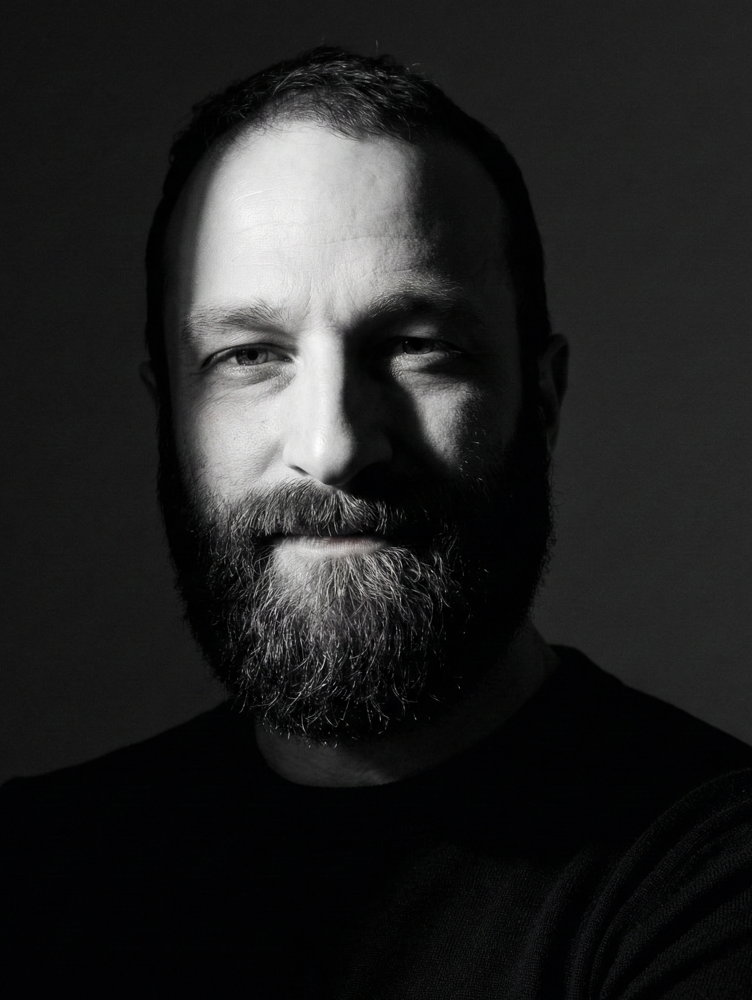

Digital Solutions Specialist
Digital Solutions Specialist
I build web apps, design thoughtful user experiences, and turn data into clarity. I’m a hands-on problem solver who enjoys fixing things, troubleshooting systems, and collaborating on projects that make an impact.
A mix of client work, apps, and collaborative builds.

I have been behind a keyboard for over 30 years. It started as curiosity when I was a kid and never really stopped. Computers were always the thing I gravitated toward, even when my career went in other directions.
Those directions included running a music store for three years, customer service, operations, and a stretch doing technical consulting where I sat between software developers and the clients they were building for. That last one involved a fair amount of systems thinking, requirement gathering, and learning how quickly things go sideways when communication breaks down. Different industries, but the same thread running through all of it.
Eventually I decided to come back to the technical side properly. I went back to school, and here I am finishing a capstone project, picking up freelance work, and genuinely enjoying the process of adding to the list of new things I can build and fix.
Live repository data pulled from the GitHub API.